Gesture Control:
- Arahkan jari telunjuk ke atas/bawah untuk scroll
- Kepalkan tangan untuk kembali ke menu
Gunakan

untuk bergerak:
W untuk bergerak ke atas, A untuk bergerak ke kiri, S untuk bergerak ke bawah, D untuk bergerak ke kanan.
Gunakan mouse untuk mengarahkan peluru ke Zombie musuh.
Tekan SHIFT untuk Sprint.
Tekan F untuk menjatuhkan senjata saat ini.
Tekan R untuk Reload.
Ucapkan "Dor" untuk menembak peluru!
Gesture Control:
- Arahkan jari telunjuk ke atas/bawah untuk scroll
- Kepalkan tangan untuk kembali ke menu